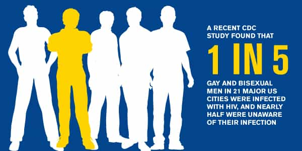

< < < Back
When Will Homosexuals Take Personal Responsibility For The Spread Of HIV? – Return Of Kings
What do Elton John and the late George Michael, pictured in the main photo for this article, have in common? They’ve spent years talking about HIV/AIDS, all without convincing a great many gay men to take responsibility for not contracting it. In fact, gay men with HIV/AIDS are routinely—and falsely portrayed—as the victims of discrimination, to the point of being able to say society itself caused their infection.
Numerous organizations blame “homophobia” on why gay men get the disease, instead of an individual’s poor life choices. For example, the stupidly-named Human Rights Campaign says that “[d]ealing with the potential consequences of bias and discrimination—job loss, homelessness, lack of healthcare insurance—often results in LGBTQ people engaging in behaviors that facilitate the spread of HIV.” In other words, “I felt horny, decided not to wear a condom, and got HIV/AIDS.”
For over two decades, gay men have been aware of the severe risks of HIV/AIDS. Governments and charities pump hundreds of millions of dollars, possibly even billions, into awareness and treatment programs. Yet homosexuals and actively bisexual men, around 2% of the population, still account for 82% of all male HIV/AIDS diagnoses in the United States and 67% of all diagnoses. Clearly bucketloads of gay and bisexual men continue to refuse to take responsibility for their health. But few people can raise this problem without being publicly attacked as “homophobes.”

If over one million Americans are living with HIV/AIDS, two thirds of them are gays/male bisexuals, and 2% of American men are gay/bisexual, over 20% of gay/bisexual men suffer from the disease. For every five male partners a gay or bisexual man has, one of them is likely to have HIV/AIDS. This is roughly the same rate as in the general populations of sub-Saharan HIV/AIDS hotspots, including South Africa, Lesotho, Swaziland and Namibia.
Perversely, HIV/AIDS is still seen as a “human rights” issue in the West. Though the health system should certainly treat individuals with the disease, large numbers of people within the gay community are wilfully engaging in behaviors they know will eventually make them contract HIV/AIDS. Instead of holding LGBT individuals to account for their moronic recklessness, HIV/AIDS is perceived through the lens of victimhood and “homophobic” discrimination.
The HIV/AIDS epidemic amongst the LGBT population is also intensely selfish. It takes important government and private resources away from sick people who develop illnesses through no fault of their own. I’m more inclined to feel sorry for a child with leukaemia than a 35-year-old gay man who has brushed aside years of cautionary literature about what can happen when he penetrates another man’s asshole without a condom. The same goes for people living on a $1 a day in sub-Saharan Africa–these people can actually be seen as victims.
Why this matters
Homosexuality is a rare topic choice for my articles. Aside from occasional pieces, such as how it is easier to come out as gay or transsexual in Hollywood than as a conservative, I tend to leave the issue alone. Part of the reason is the general futility of trying to “convert” gay people to heterosexuality. Certain Christian conservatives have spent too little time on positively advancing their idea of the nuclear family and too much time concentrating on gay men who aren’t going to change their sexual practices anytime soon.
Nonetheless, the HIV/AIDS victim factory raises my ire. We all make mistakes in life, but gay and bisexual men seem to be the only group getting a badge of honor from their stupidity in contracting HIV/AIDS. I will not ever wish this disease on a person, but I also cannot be blind to the pass society gives gay men to infect themselves with such a serious ailment, irrespective of whether treatment options have improved. As you can see from the video above, discussion about HIV/AIDS has gone on since the days of Princess Diana. There is simply no excuse for so many gay men contracting it in the 2010s.
Whilst there’s no proof that British singer George Michael died of HIV/AIDS (and I don’t believe he did, either), he was instrumental in the “public awareness” campaigns that really took off in the late 1990s. Elton John, who, unlike Michael, does not have the disease, was another key figure in the earlier appeals to gay men. The problem is that these initiatives, however much they claimed to preach “be careful” attitudes, failed to properly portray members of the gay community as agents of their own infection.
Is it a “human rights” issue when a man gets a woman pregnant?
The guy who caused this won’t be treated like a victim.
You tempt fate, don’t use a condom, get a girl pregnant, and, voila, become a victim. Nope, that never happens. Nor should it. In fact, you get lumped with 18 years of supporting the child directly or government-enforced child support. As a society, we believe in a personal responsibility-centric law of cause and effect for a man getting a woman pregnant. But what about a typically gay disease that will either eventually kill you or cost the health system tens of thousands of dollars per case? Well, that’s just bigotry against gay men.
My fellow Return Of Kings columnists and I frequently remark on the need for SJWs and liberals to keep privileged groups as never-ending victims. Whether we focus on urban blacks shooting other blacks at epidemic levels but blaming white police, gays contracting HIV/AIDS at obscene per capita rates, or women turning a man whistling into “sexual assault,” the pity-me factory of victimization is always in overdrive.
Here’s our advice for gay men: if you don’t want HIV/AIDS, don’t do the things that get you HIV/AIDS. But I suppose saying this makes us homophobes, right?
Read More: The Truth About AIDS & Heterosexual Transmission